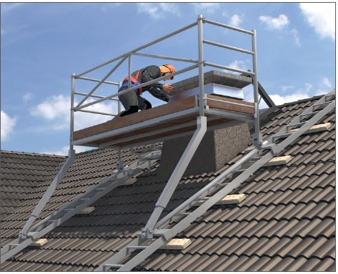
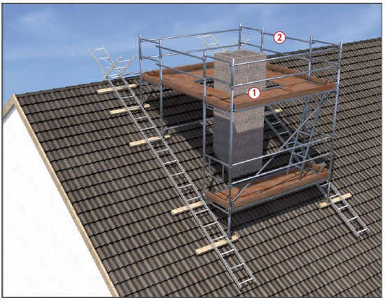

Dachgerüste für den Hausschornsteinbau |


Sicherheitsabstand| Nennspannung | Sicherheitsabstand |
| bis 1000 V | 1,0 m |
| über 1 kV bis 110 kV | 3,0 m |
| über 110 kV bis 220 kV | 4,0 m |
| über 220 kV bis 380 kV oder bei unbekannter Nennspannung | 5,0 m |
07/2021